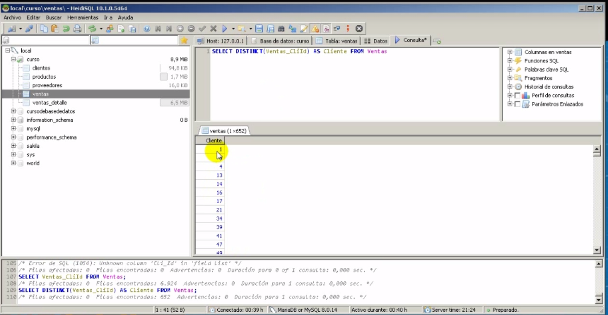
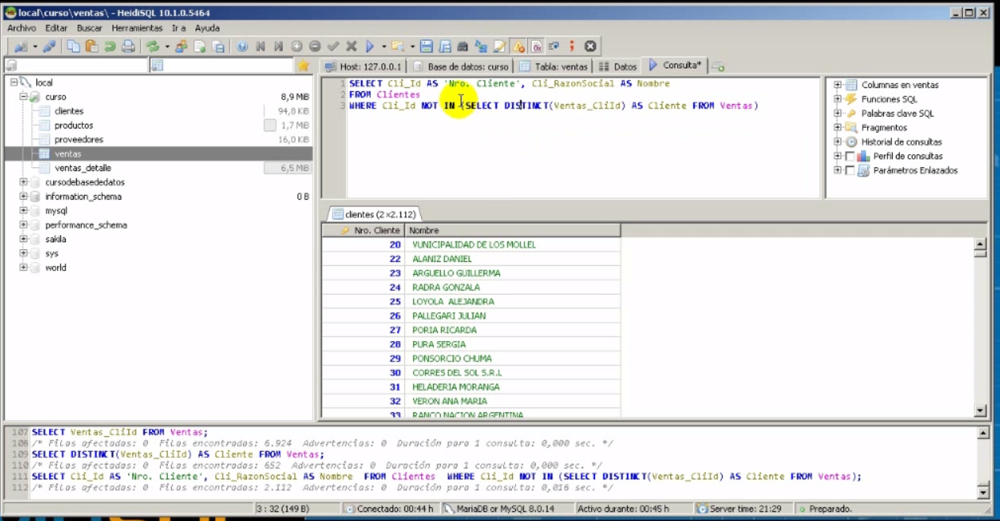
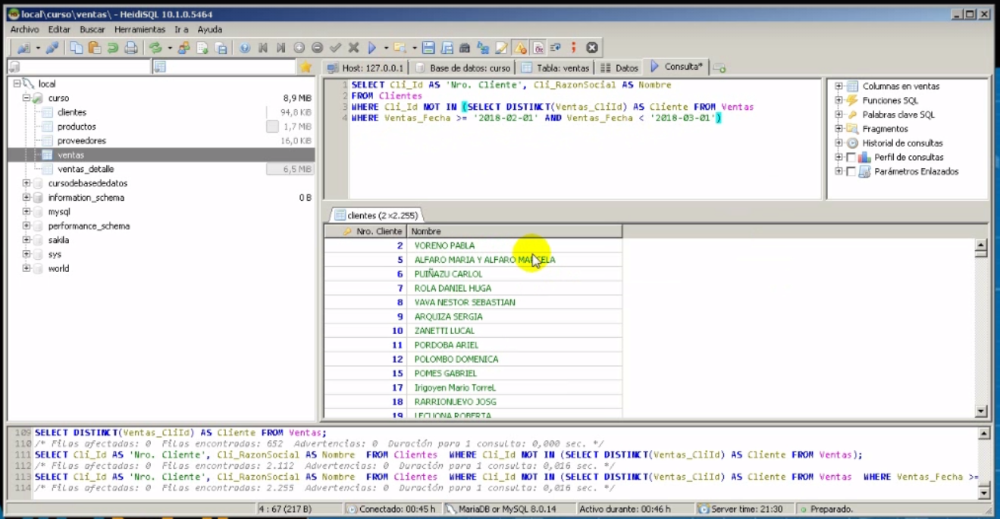
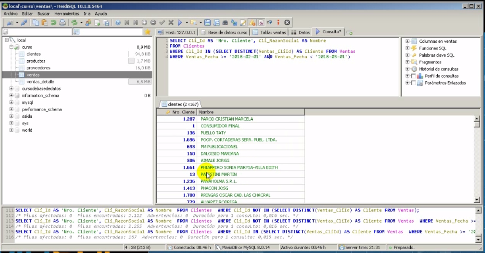
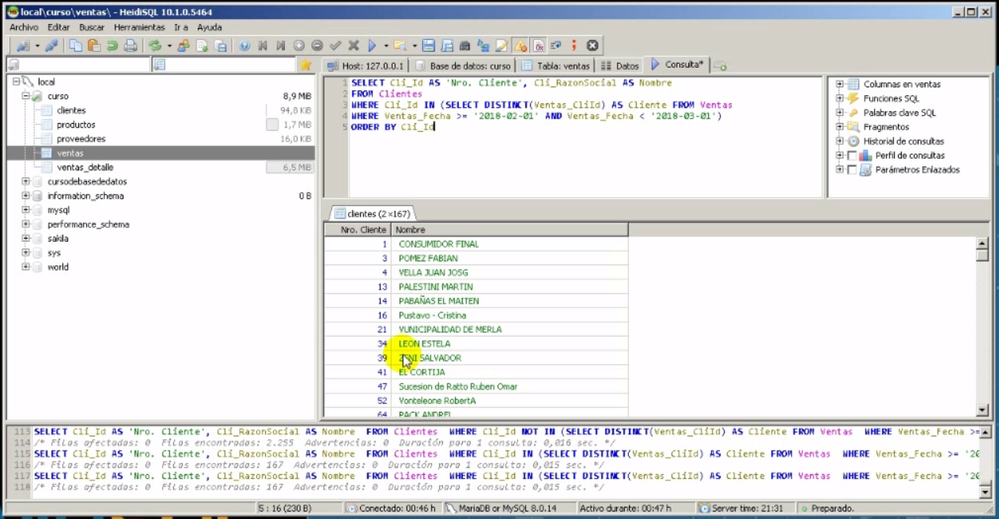
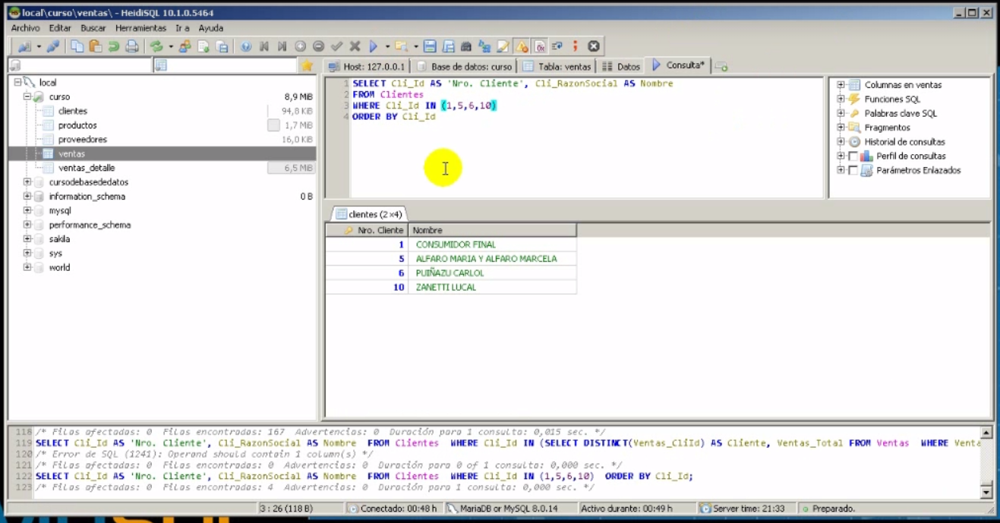

Valor disting nos trai el valor distinto

- Valor disting nos trai el valor distinto
Not in (Clientes que no nos han comprado en la tabla ventas.)

- Not in (Clientes que no nos han comprado en la tabla ventas.)
- Muestra el cliente_id, cluiente razon_social de la tabla cliente donde el cli_id no este de la tablas ventas
Not in (Clientes que no nos han comprado en la tabla ventas.)

- Not in (Clientes que no nos han comprado en la tabla ventas.)
- Lo mismo pero con la fecha de febrero.
Not in (Clientes que si han comprado en la tabla ventas.)

- Not in (Clientes que si han comprado en la tabla ventas.)
- Lo mismo pero con la fecha de febrero.
Not in (Clientes que si han comprado en la tabla ventas y estan ordenados.)

- Not in (Clientes que si han comprado en la tabla ventas y estan ordenados.)
- Lo mismo pero con la fecha de febrero.
------------------------------------------------------
lAS SUBCONSULTAS SOLO TIENEN PUEDEN TENER UN SALO VALOR DE CONSULTA
##############################
DONDE ESTA EL WHERE DEL SELECT EN EL WEHERE SOLO PUED IR UN VALOR SINO MANDA ERROR
##############################
------------------------------------------------------
Sub consulta con valor 1,2,3,4

- Sub consulta con valor 1,2,3,4
- Lo mismo pero con la fecha de febrero.